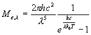

Plancks lag ser för svarta kroppat ut så här:
För grå kroppar multplicerar man med den konstanta a och för färgade kroppar med den våglängdsberoende a. Man kan plotta kurvan med hjälp av matlab. Man kan till och med få en ytplot av strålningen som funktion av våglängd och temperatur.